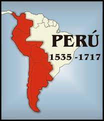
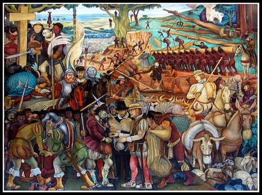
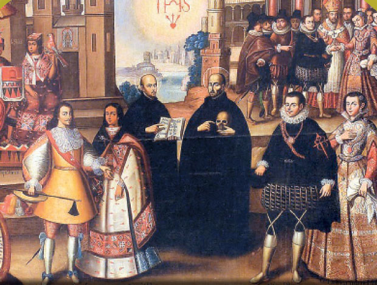
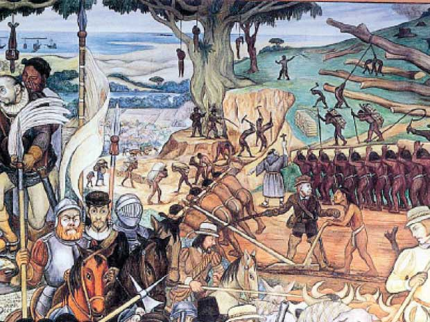
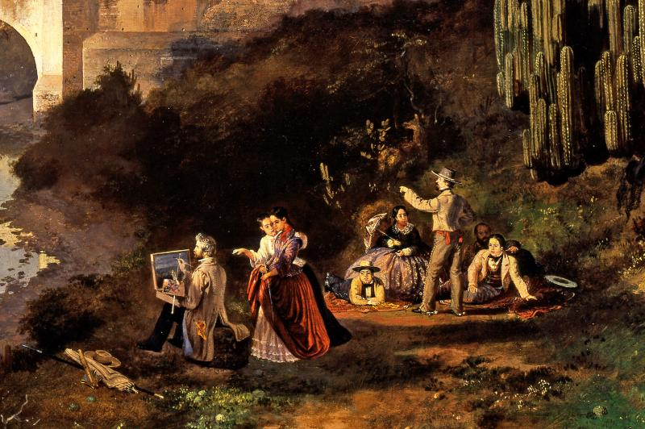

Introducción

El Virreinato del Perú fue una entidad política y administrativa establecida por la Corona Española en el
siglo XVI. Comprendía un vasto territorio en América del Sur, que abarcaba desde Colombia hasta Chile y
Argentina. Durante más de tres siglos, el Virreinato del Perú fue el centro neurálgico del poder colonial
español en la región.
El Virreinato del Perú se estableció en 1542, con la finalidad de facilitar la administración y el control
de los territorios conquistados por los españoles. Su capital fue la ciudad de Lima, que se convirtió en una
opulenta metrópoli y uno de los principales centros culturales y comerciales de América Latina.
Durante su existencia, el Virreinato del Perú experimentó un intenso mestizaje cultural entre las
tradiciones indígenas y la influencia española. Surgieron nuevas formas de vida social, económica y
política, donde las castas y los grupos étnicos se mezclaron y formaron una sociedad diversa y compleja.
En términos económicos, el Virreinato del Perú fue una fuente importante de riqueza para España. Sus minas
de plata en Potosí (actual Bolivia) y sus extensas plantaciones de caña de azúcar fueron pilares
fundamentales de la economía colonial. Además, el puerto del Callao se convirtió en un punto clave para el
comercio entre América, Europa y Asia.
Sin embargo, el Virreinato del Perú también fue escenario de conflictos y desigualdades sociales. La
explotación de los recursos naturales y la mano de obra indígena generaron tensiones y protestas que
llevaron a levantamientos y rebeliones.
Finalmente, en 1824, el Virreinato del Perú llegó a su fin con la independencia de Perú y otros países
sudamericanos. Aunque su existencia dejó un legado duradero en la historia y la cultura de la región,
también marcó un período de colonización y opresión para los pueblos indígenas.
El Virreinato del Perú es una parte fundamental de la historia latinoamericana y sigue siendo objeto de
estudio e interés para comprender el pasado y la identidad de la región.
Historia
El Virreinato del Perú fue una entidad política y administrativa creada por la corona española en el siglo
XVI para gobernar los territorios coloniales ubicados en el territorio que hoy comprende Perú y parte de los
países vecinos. La historia del Virreinato del Perú es fascinante y se extiende por más de tres siglos,
abarcando desde su fundación en 1542 hasta su independencia en 1824.

Fundación del Virreinato del Perú:
El proceso de conquista del territorio incaico por parte de los españoles estuvo liderado por Francisco
Pizarro. El 26 de julio de 1533, se produjo la captura del último Inca, Atahualpa, en la ciudad de
Cajamarca, y con ello, el control efectivo del imperio incaico pasó a manos de los conquistadores españoles.
A partir de ese momento, se inició la colonización y explotación de los recursos y riquezas del territorio.
Organización y administración:
El virreinato era gobernado por un virrey, representante directo del rey de España. El virrey tenía amplias
facultades para gobernar la región, administrar justicia, fomentar la economía y defender los intereses de
la corona. Además, contaba con un Consejo Real de alto nivel que lo asesoraba en la toma de decisiones.
Auge y esplendor:
Durante los primeros años del virreinato, se produjo un rápido crecimiento económico debido a la explotación
de las riquezas minerales, como el oro y la plata, extraídas principalmente de las minas de Potosí en
Bolivia y otras regiones peruanas. Esta bonanza económica atrajo a muchas personas de diferentes partes de
España y Europa, lo que llevó a un florecimiento cultural y artístico en la región.
Declive y descontento:
Con el paso del tiempo, la explotación y la opresión generaron descontento entre los pueblos indígenas y
mestizos, quienes se organizaron y llevaron a cabo varios levantamientos y rebeliones contra el dominio
español. Uno de los movimientos más notables fue la rebelión de Túpac Amaru II en 1780, liderada por el
cacique indígena José Gabriel Condorcanqui, quien se autoproclamó descendiente del último Inca.
Independencia:
El proceso de independencia de las colonias americanas comenzó a finales del siglo XVIII y principios del
XIX. En 1821, el general argentino José de San Martín lideró el Ejército de los Andes y liberó Lima,
declarando la independencia del Perú el 28 de julio de 1821. Sin embargo, la lucha contra el dominio español
continuó hasta 1824, cuando el general Simón Bolívar, junto con el general Antonio José de Sucre, obtuvo la
victoria definitiva en la Batalla de Ayacucho, asegurando la independencia del Perú y poniendo fin al
Virreinato del Perú.
Sociedad y Cultura
Sociedad:
La sociedad del Virreinato del Perú era profundamente jerarquizada y se basaba en la estructura social
impuesta por los españoles. En la cima de la pirámide social se encontraba la élite española, que incluía a
los funcionarios reales, los miembros del clero y los grandes terratenientes. Estos españoles gozaban de
privilegios y controlaban la mayor parte de las tierras y los recursos.
Cultura:
El Virreinato del Perú experimentó una fusión cultural única entre las tradiciones indígenas y las
influencias
españolas. Esta fusión se reflejó en diversos aspectos de la vida cotidiana, incluyendo el arte, la
arquitectura, la religión y la gastronomía.
Arte y arquitectura: Se desarrolló un estilo arquitectónico conocido como "Barroco mestizo" que
combinaba
elementos del arte indígena y español. Esto se puede apreciar en las iglesias y catedrales construidas
durante
este período, que exhiben una mezcla de estilos europeos e indígenas.
Religión: La religión católica fue una parte fundamental de la vida en el virreinato y desempeñó un
papel
importante en la colonización y la evangelización de la población indígena. Se construyeron numerosas
iglesias y
se impulsó la conversión de los nativos al cristianismo.
Gastronomía: La fusión cultural también se manifestó en la cocina peruana, que incorporó ingredientes
y
técnicas
indígenas junto con las influencias culinarias españolas. Esto dio lugar a una rica variedad de platos que
mezclaban sabores y tradiciones de ambos mundos.
Lengua: El idioma español se convirtió en la lengua dominante del virreinato, aunque muchas
comunidades
indígenas continuaron preservando sus idiomas nativos.
Economía
El Virreinato del Perú fue una entidad política y administrativa creada por la Corona española en 1542, que
abarcaba la mayor parte de Sudamérica. Durante casi tres siglos, el Perú fue uno de los territorios más
importantes del Imperio español debido a su riqueza mineral y su posición estratégica en América del Sur.
Minería: La economía del
Perú colonial se centraba principalmente en la minería, especialmente en la
extracción de plata. La región de Potosí, en lo que hoy es Bolivia, se convirtió en uno de los yacimientos
de plata más ricos y explotados del mundo. Otros minerales como el oro, el cobre y el mercurio también
fueron extraídos en diversas regiones del virreinato.
Agricultura: La agricultura fue otra actividad económica importante. Se cultivaban productos como
maíz, papas, cacao, algodón, trigo, azúcar, entre otros. Los valles costeros y algunas regiones de la sierra
eran propicias para la agricultura, lo que permitía el abastecimiento de alimentos para las ciudades y las
actividades mineras.
Comercio: El comercio en el virreinato estaba controlado por la Corona española a través del sistema
de flotas y galeones, que regulaba el intercambio comercial con España. Se establecieron puertos comerciales
importantes como el Callao en la costa peruana.
Sistemas de Trabajo Forzado: Para satisfacer la creciente demanda de mano de obra en las minas y en
las haciendas, se implementaron diferentes sistemas de trabajo forzado. Uno de los más conocidos fue el
sistema de la mita, donde los indígenas debían trabajar en las minas y en obras públicas de forma rotativa y
obligatoria. Este sistema provocó explotación y abusos hacia los trabajadores indígenas.
Manufactura y Artesanía: Se desarrollaron diversas actividades de manufactura y artesanía para
abastecer las
necesidades locales y las demandas de las élites coloniales. Hubo producción de tejidos, cerámica, muebles,
entre otros.
Caucho y otros productos: Con el tiempo, también se explotaron otros recursos naturales, como el
caucho de la selva amazónica, que se convirtió en un producto valioso en el siglo XIX.
Legado
El virreinato fue una estructura política y administrativa establecida por el Imperio Español para gobernar
sus colonias en el continente americano.
El legado del virreinato es sumamente importante en la historia de América Latina y ha dejado una profunda
huella en la identidad de los países que hoy conforman la región. Algunos aspectos significativos del legado
del virreinato incluyen:
Idioma y cultura: La lengua
española se convirtió en el idioma dominante en la mayoría de los países
latinoamericanos. Además, la cultura española se mezcló con las culturas indígenas preexistentes, dando
origen a una rica diversidad cultural en la región.
Organización política y administrativa:El sistema de virreinatos, audiencias y gobernaciones
introdujo una forma de gobierno centralizado que afectó la organización política en la región y, en algunos
casos, sentó las bases para la estructura política de los países actuales.
Economía:La economía de América Latina estuvo orientada hacia el beneficio del Imperio Español, con
un enfoque en la extracción de recursos naturales y la producción agrícola para el comercio con Europa.
Muchos de los patrones económicos establecidos en ese periodo han influido en el desarrollo económico de la
región hasta el día de hoy.
Arquitectura y urbanismo:La arquitectura colonial, con sus plazas, catedrales, edificios
gubernamentales y casas coloniales, sigue siendo parte del paisaje urbano en muchas ciudades
latinoamericanas.
Arte y literatura:La influencia de la corriente artística y literaria europea se mezcló con las
expresiones culturales autóctonas, dando lugar a un rico patrimonio artístico y literario en la región.
Estratificación social:El sistema de castas y clases sociales establecido durante el virreinato tuvo
un impacto duradero en la estructura social de muchos países latinoamericanos, aunque ha evolucionado a lo
largo del tiempo.